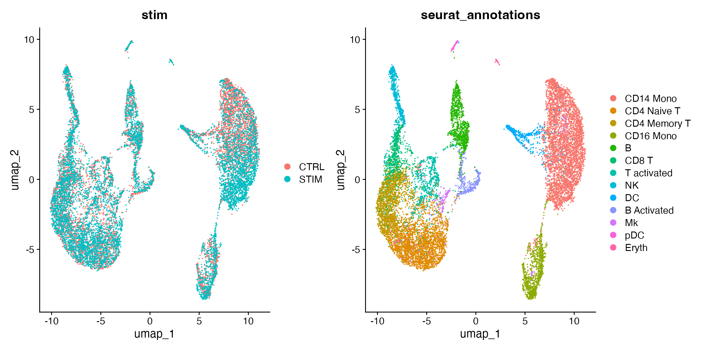
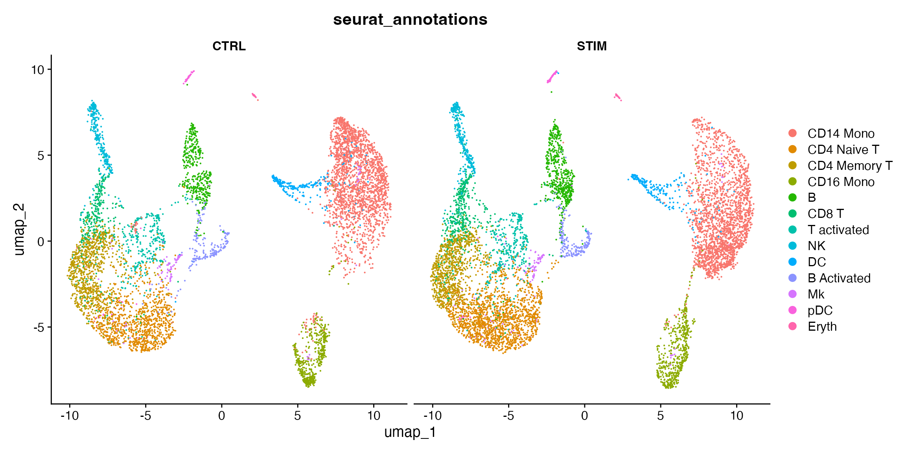
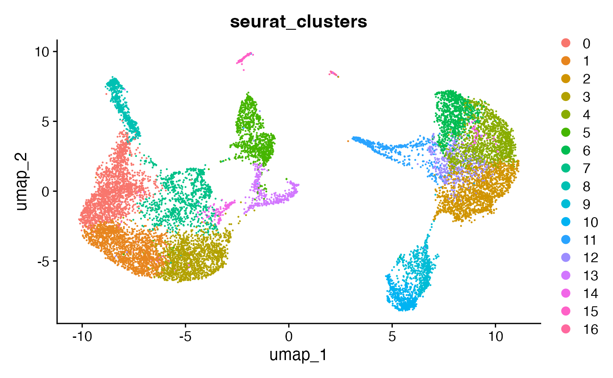
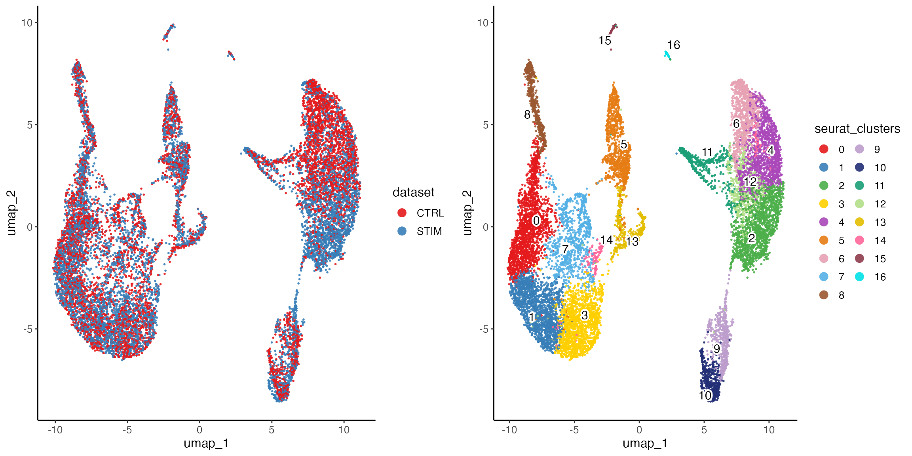
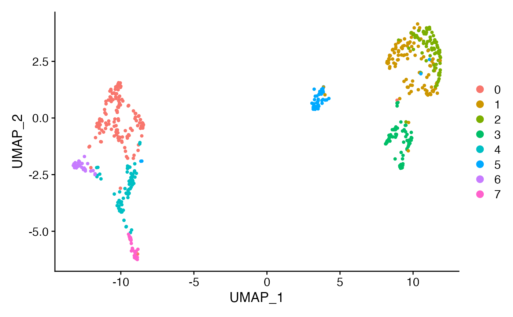

Using LIGER to integrate datasets stored in Seurat objects
Yichen Wang
2024-03-11
Source:vignettes/articles/liger_with_seurat.Rmd
liger_with_seurat.RmdGoal of this article
We have introduced the basic usage of LIGER throughout many other vignettes, together with various use cases. In this article, we bring LIGER to the Seurat users, showing how to run rliger functions on Seurat objects to integrate the datasets.
With old version (< 1.99.0), we provided wrapper functions in SeuratWrappers that allow rliger functions to be run on Seurat objects. With the current new version (>= 1.99.0), we now provide native support for Seurat objects in rliger. The functions applied to a liger object can now be directly applied to a Seurat object.
This article will demonstrate the workflow from loading a standard Seurat data to obtaining the integration labeling.
Example datasets, with V5 style
This vignette uses the example shown on Seurat official integration tutorial. A package called SeuratData would be needed for loading the example datasets.
library(Seurat)
library(SeuratData)
library(patchwork)
library(rliger)
InstallData("ifnb")
ifnb <- LoadData("ifnb")
ifnb## An object of class Seurat
## 14053 features across 13999 samples within 1 assay
## Active assay: RNA (14053 features, 0 variable features)
## 2 layers present: counts, dataWith the release of Seurat v5, it is now recommended to have the gene
expression data, namingly “counts”, “data” and “scale.data” slots
previously in a Seurat Assay, splitted by batches. A metadata variable
is required to be presented that indicates the batch information. In the
example dataset, the batch information is stored in the
stim variable. This would be the analogous to the
ligerObj$dataset variable with a liger object.
ifnb[["RNA"]] <- split(ifnb[["RNA"]], f = ifnb$stim)
ifnb## An object of class Seurat
## 14053 features across 13999 samples within 1 assay
## Active assay: RNA (14053 features, 0 variable features)
## 4 layers present: counts.CTRL, counts.STIM, data.CTRL, data.STIMFrom the printed output, we can see that the the expression data of
the ifnb object now is presented in layers by
conditions.
Integration with LIGER
Preprocessing
The very first step is to go through the QC and remove non-expressing cells and genes. LIGER’s primary strategy for integration is to perform integrative non-negative matrix factorization (iNMF). Due to the nature of the method, it is important that all-zero rows or columns are removed from the input data. Other QC criteria can also be optionally added, such as minimum number of genes expressed, minimum number of UMIs, mitochondrial gene percentage and etc. The QC techniques are simple and similar across all kinds of toolkits and platforms, so we will not go into detail here. Given that the metrics are already calculated when creating the Seurat object, here we directly go with Seurat suggested syntax to obtain the subset.
ifnb <- subset(ifnb, subset = nFeature_RNA > 200 & nFeature_RNA < 2500)We next perform preprocessing steps specific to LIGER:
- library size normalization, without CPM or log1p transformation
- Variable gene selection, done individually for each dataset and then combined
- Scaling the normalized expression of variable genes, without centering to address the non-negative requirement of iNMF
ifnb <- ifnb %>%
normalize() %>%
selectGenes() %>%
scaleNotCenter()
ifnb## An object of class Seurat
## 14053 features across 13997 samples within 1 assay
## Active assay: RNA (14053 features, 4233 variable features)
## 8 layers present: counts.CTRL, counts.STIM, data.CTRL, data.STIM, ligerNormData.CTRL, ligerNormData.STIM, ligerScaleData.CTRL, ligerScaleData.STIMNote that new layers created for the normalized and scaled data are
named different to the Seurat general convention. Instead of
"data" and "scale.data" as you would see in a
Seurat object, we name them "ligerNormData" and
"ligerScaleData", respectively, in order to avoid data
processed with LIGER-specific approach being misused in general scRNAseq
analysis, or other Seurat general production being misused for LIGER
integration.
Integration
Now, we are ready for performing iNMF integration on the two datasets.
ifnb <- ifnb %>%
runINMF(k = 20) %>%
quantileNorm()
ifnb## An object of class Seurat
## 14053 features across 13997 samples within 1 assay
## Active assay: RNA (14053 features, 4233 variable features)
## 8 layers present: counts.CTRL, counts.STIM, data.CTRL, data.STIM, ligerNormData.CTRL, ligerNormData.STIM, ligerScaleData.CTRL, ligerScaleData.STIM
## 2 dimensional reductions calculated: inmf, inmfNormAs the object information shown above, runINMF()
produces two low-dimensional representations, which can be accessed with
ifnb[["inmf"]] and ifnb[["inmfNorm"]]. We call
them cell factor loading matrices. The first one is the raw
factorization result from iNMF, and the second one is the quantile
normalized version of the first one. The quantile normalization is
performed for suppressing the variance between the cell datasets so that
the datasets can be well aligned.
Visualizing the integration result
Given that the example data provided by Seurat already has annotation of cell types, we can now examine visually how the integration result looks like. We will create a UMAP embedding using the cell factor loading, and then make scatter plot colored by dataset source and the cell type annotation.
ifnb <- RunUMAP(ifnb, reduction = "inmfNorm", dims = 1:20)
gg.byDataset <- DimPlot(ifnb, group.by = "stim")
gg.byCelltype <- DimPlot(ifnb, group.by = "seurat_annotations")
gg.byDataset + gg.byCelltype
To visualize the two conditions side-by-side, we can use the
split.by argument to show each condition colored by
cluster.
DimPlot(ifnb, group.by = "seurat_annotations", split.by = "stim")
Joint clustering
Despite of the annotation provided above, most of the time, people
would need to cluster the cells basing on the integration and then work
on the annotation. Here we demonstrate how to use Seurat functions to
create cluster labels basing on the cell factor loading obtained with
runINMF().
ifnb <- ifnb %>%
FindNeighbors(reduction = "inmfNorm", dims = 1:20) %>%
FindClusters()## Modularity Optimizer version 1.3.0 by Ludo Waltman and Nees Jan van Eck
##
## Number of nodes: 13997
## Number of edges: 475772
##
## Running Louvain algorithm...
## Maximum modularity in 10 random starts: 0.8865
## Number of communities: 17
## Elapsed time: 1 secondsAgain, we can also visualize the clustering label on the UMAP previously created.
DimPlot(ifnb, group.by = "seurat_clusters")
Class conversion in various use cases
Examples above is based on the latest Seurat architecture, where layers of data can be split by dataset source, which makes it computationally efficient for all kinds of integration tool, not only LIGER but also other methods introduced in Seurat official integration vignette. We highly recommend that users follow up with the syntax. However, if you are working on existing projects where old version of Seurat object is presence, or you want to move on to Seurat downstream analysis after LIGER integration, we show some potential work arounds in the section below.
Update Seurat object to its latest structure
Seurat provides UpdateSeuratObject() function to
automatically convert Seurat objects of old versions to the latest
version.
seuratObj.new <- UpdateSeuratObject(seuratObj.old)After this, all the previously introduced analysis can be applied to the updated object.
Create a liger object from multiple Seurat objects
In the old days, Seurat recommended that datasets to be integrated
should be stored separately in individual Seurat objects. If you have
data in this form, we suggest using createLigerObject()
function with a named list of Seurat objects.
seurat.list <- list(dataName1 = seuratObj1, dataName2 = seuratObj2)
ligerObj <- createLiger(seurat.list)Note that the metadata from individual objects is not copied to the
liger object, because there is no guarantee of field consistency and can
bring a lot of mess, and LIGER’s core integration functionality does not
rely on metadata for now. However, if you need to keep the metadata for
quick visualization after integration, you can manually bring them to
the liger object with cellMeta()<- method. Setting
useDataset argument ensures that the metadata extracted
from a single dataset is assigned to the matching dataset; argument
inplace indicates that the values are replaced only for the
specified dataset instead of erasing existing values for all cells in
the variable first.
cellMeta(ligerObj, "newVarName", useDataset = "dataName1", inplace = TRUE) <- seuratObj1$oldVarNameConvert a single Seurat object to a liger object
It is expected that there can be scenario where datasets to be
integrated are stored in a single Seurat object. In this case, the best
practice should be to update the object to the latest version if it is
not yet, and then do split() as shown in the previous
example. However, if users are interested in a full LIGER style
analysis, we provide as.liger() method for the Seurat
object. Importantly, the datasetVar argument must be
properly provided for LIGER to infer the dataset source. Optionally, if
annotation and dimensionality reduction is presented, we can set the
default value to the liger object for quick visualization
ifnb.liger <- as.liger(ifnb, datasetVar = "stim")
defaultCluster(ifnb.liger) <- "seurat_clusters"
defaultDimRed(ifnb.liger) <- "umap"
plotByDatasetAndCluster(ifnb.liger)
Note that when converting a Seurat object to a liger object, only the raw gene expression counts are copied to the output object. As mentioned in the preprocessing step, normalized and scaled data produced by other tools are generally not suitable for LIGER analysis.
Move on to Seurat downstream analysis after LIGER
Downstream analysis after obtaining joint clustering labels from the
integration is always a common use case. LIGER provides a wide range of
methods for this purpose, such as runMarkerDEG() and
runPairwiseDEG() that help with across-cluster or
across-condition-per-cluster comparison; imputeKNN() and
linkGenesAndPeaks() for cross comparison between dual-omics
data; runGOEnrich() and runGSEA() for
functional enrichment analysis. For extending the analysis with as much
possibility as possible, we provide conversion methods for the exporting
a liger object to a more publically known structure.
data("pbmc", package = "rliger")
# Go through a full regular LIGER analysis
pbmc <- pbmc %>%
normalize() %>%
selectGenes() %>%
scaleNotCenter() %>%
runINMF(k = 20) %>%
quantileNorm() %>%
runCluster() %>%
runUMAP()
pbmc.seurat <- ligerToSeurat(pbmc)
pbmc.seurat## An object of class Seurat
## 279 features across 600 samples within 1 assay
## Active assay: RNA (279 features, 173 variable features)
## 6 layers present: counts.ctrl, counts.stim, ligerNormData.ctrl, ligerNormData.stim, ligerScaleData.ctrl, ligerScaleData.stim
## 2 dimensional reductions calculated: inmf, UMAP
DimPlot(pbmc.seurat)
As shown in the printed information above, normalized and scaled data
are explicitly named to avoid confusion with general scRNAseq use case.
The quantile-normalized cell factor loading is now stored in reduction
pbmc.seurat[["inmf"]].